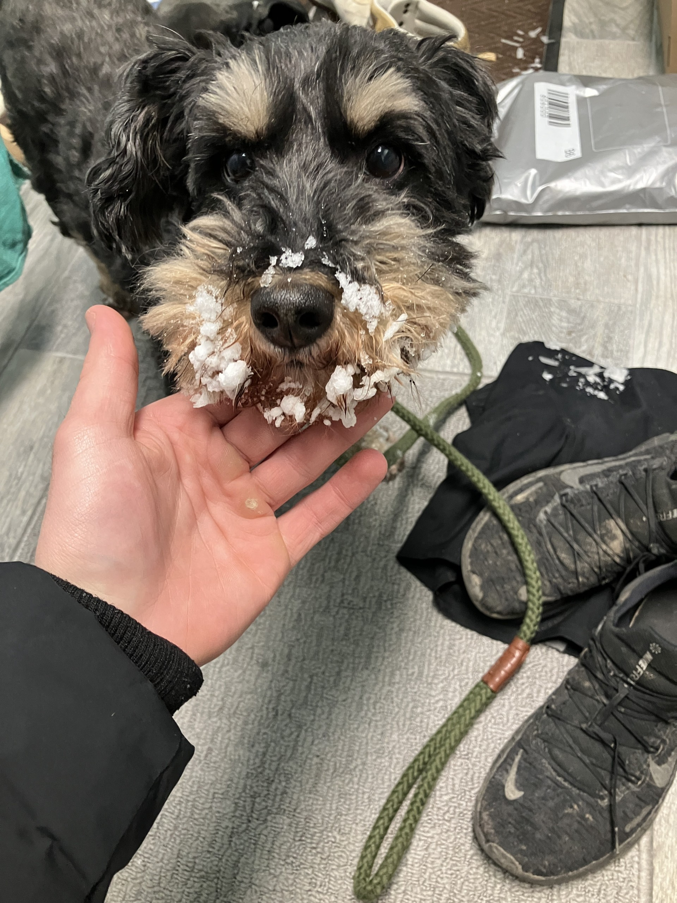

I will use this web page to show off a picture of my dog, Squiggy.
Here he is:

My favorite things about Squiggy in no particular order are as follows:
Here are a couple things that I don't like about Squiggy:
Here is a table providing some basic information about Squiggy:
| Breed | Age | Favorite Toy |
|---|---|---|
| Schnoodle (Schnauzer mixed with Poodle) | At least 7 | His beds (he tears them up all the time but also sleeps in them) |
Here is a link to learn more about Schnoodles: